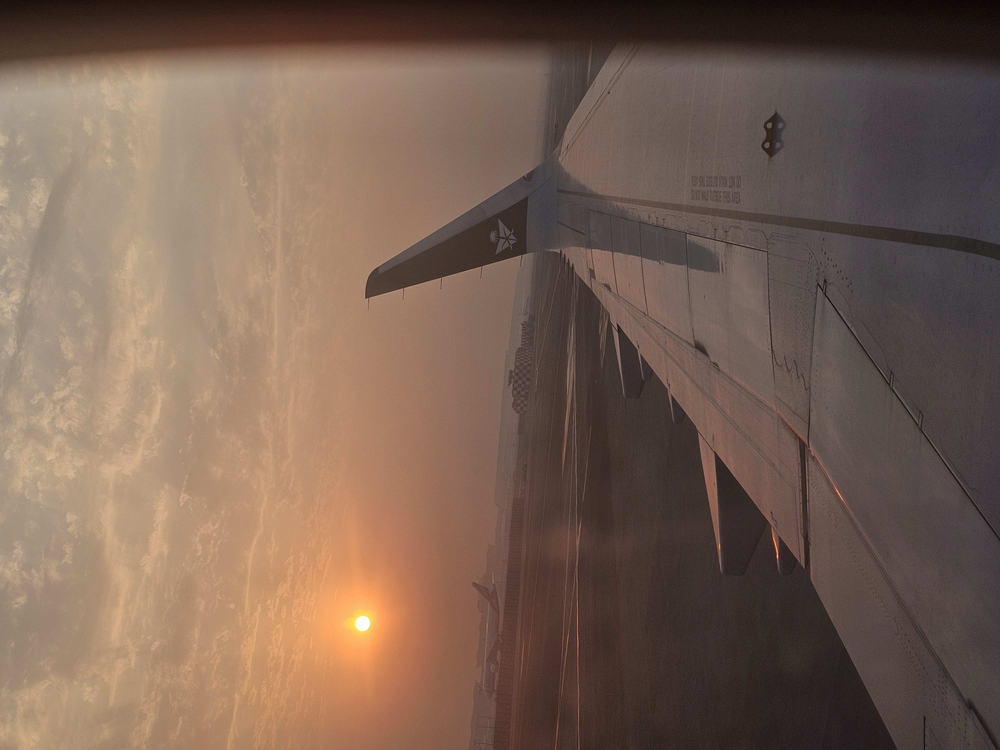

Cœur sans frein
Quelque chose en moi
que je croyais enterré
s’est levé sans prévenir,
comme une ville
après le séisme.
Je reconnais ce vertige.
Cette vieille folie
qui porte le visage du désir
et le parfum discret du danger.
J’ai déjà connu
la lumière qui brûle,
le feu qui promet l’été
et finit par laisser
des cendres dans la bouche.
J’aimerais être raisonnable.
Mettre mon cœur en quarantaine,
poser des barrières,
déclarer l’état d’urgence
avant même
que la guerre commence.
Mais le cœur
n’a jamais respecté
les frontières.
Il ne demande pas de visa.
Il ne lit pas les avertissements.
Il traverse les douanes
avec une valise
pleine de souvenirs
et un billet sans retour.
Je savais pourtant.
Je savais qu’il ne fallait plus
ouvrir cette porte.
J’avais condamné la chambre,
cloué mes souvenirs aux murs,
jeté les clés dans une mer
où je ne voulais plus jamais nager.
Mon cœur est un animal stupide.
Il ne sait pas lire
les panneaux d’interdiction.
Il entend un rire
et oublie les cicatrices.
Il entend une voix
et remet en marche
les machines abandonnées
du désir.
Je voudrais être froid.
Je voudrais être sage.
Je voudrais pouvoir aimer
avec des gants,
une distance réglementaire,
un casque
et une sortie de secours.
Mais l’amour ne signe aucun contrat
avec la prudence.
Il entre.
Il prend la lumière.
Il déplace les meubles.
Il dort dans ton lit
avant même que tu lui aies donné
la permission.
Alors,
j’ai peur.
De moi
qui pourrait tout risquer
pour quelques secondes
de lumière.
J’ai peur de redevenir
celui qui croyait
que certaines flammes
étaient faites pour réchauffer.
J’ai peur d'aimer
avec cette violence tranquille
qui transforme les souvenirs
en fantômes
et les promesses
en chaînes.
J’ai peur du matin.
Parce que la nuit
ment magnifiquement.
Et pourtant…
je reste.
Je pourrais partir maintenant.
Sauver ce qu’il reste
de ma raison.
Refermer la porte.
Éteindre le feu.
Retourner à cette paix
que j’avais mis tant d’années
à reconstruire.
Mais mon cœur,
ce traître magnifique,
a déjà choisi.
Il ne se demande pas
si c'est dangereux.
Il ne se demande pas
si je vais souffrir.
Il ne me demande même pas
si je suis prêt.
Il bat.
Encore.
Encore.
Encore.
Et c’est peut-être cela
le véritable cauchemar :
je ne suis plus l’homme
qui tombe dans le piège.
Je suis devenu
l’homme qui voit le piège,
qui reconnaît l’araignée,
qui entend les sirènes,
qui aperçoit les récifs,
qui sait exactement
comment cette histoire
pourrait finir—
et qui avance quand même.
Parce qu’au fond,
je ne crains plus
de mourir d’amour.
Je crains davantage
de vivre longtemps
sans jamais avoir osé
me perdre encore une fois.
Djamel Metref
At Yenni le 4 septembre 2026
← Tous les poèmes